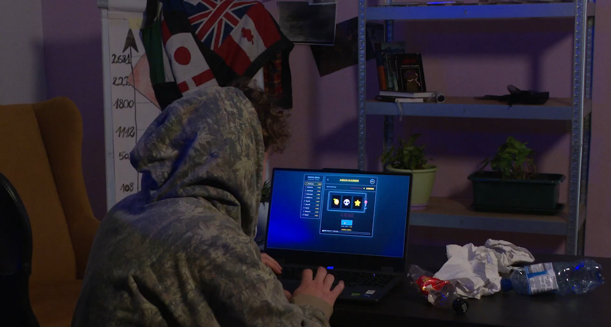
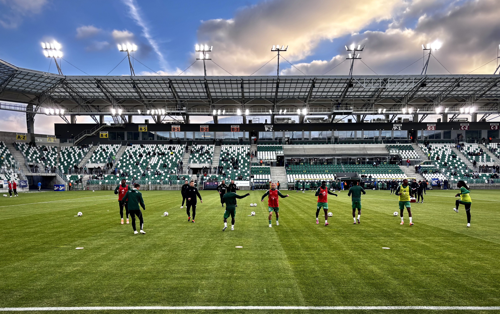
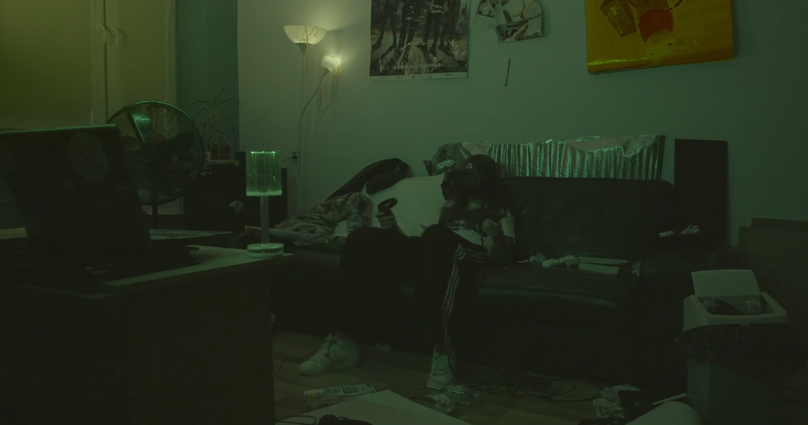
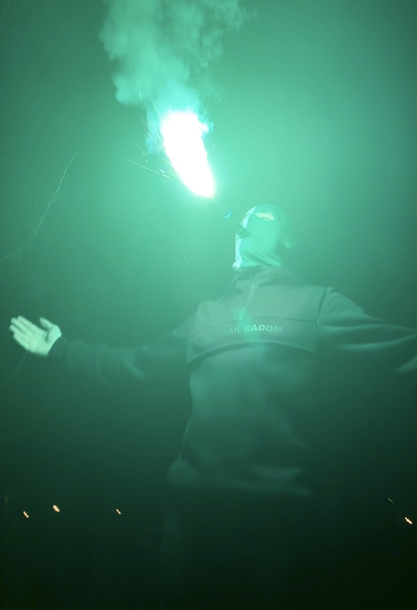
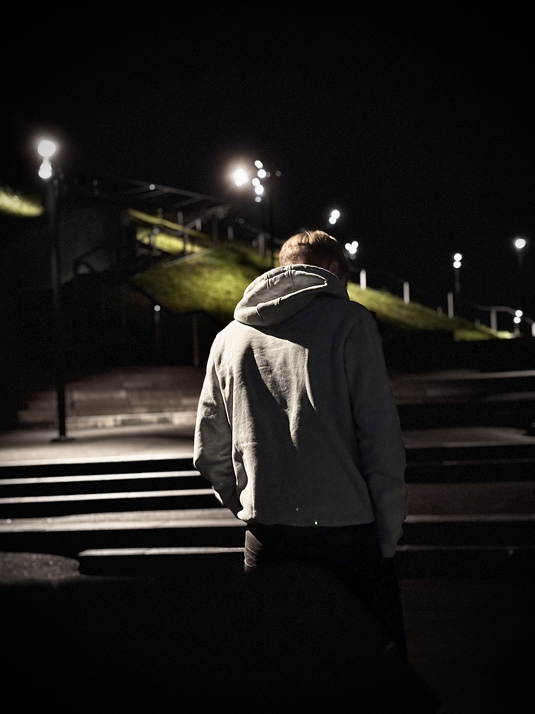
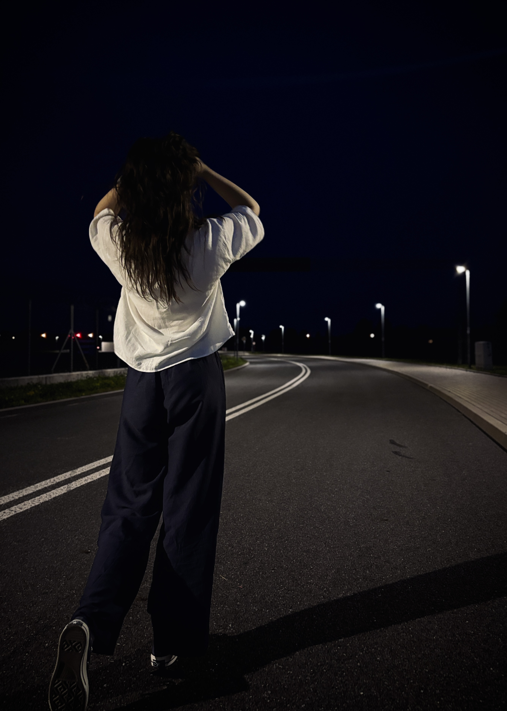

2026
Żółw
FILMFORUM / KAMERALNE LATO
Etiuda filmowa zrealizowana w ramach projektu „ABC pracy z kamerą”. Znalazłem się w gronie uczestników tworzących film.

Twórca związany z filmem, fotografią i projektami audiowizualnymi. Radom.
Nazywam się Tomasz Głąbicki. Pochodzę z Radomia i interesuję się filmem, fotografią oraz tworzeniem materiałów audiowizualnych.
W 2026 roku brałem udział w realizacji etiudy filmowej „Żółw” w ramach projektu FILMFORUM / KAMERALNE LATO.

2026
FILMFORUM / KAMERALNE LATO
Etiuda filmowa zrealizowana w ramach projektu „ABC pracy z kamerą”. Znalazłem się w gronie uczestników tworzących film.

luty 2026
Ćwiczenie filmowe · reż. Jakub Wolak
Ćwiczenie filmowe w reżyserii Jakuba Wolaka. Wspólnie z Niną Kwaśnik odpowiadałem za zdjęcia i focus.

luty 2026
Ćwiczenie filmowe · reż. Nina Kwaśnik
Ćwiczenie filmowe w reżyserii Niny Kwaśnik. Byłem operatorem kamery.

styczeń 2026
Ćwiczenie filmowe · reż. Maria Krzywicka
Ćwiczenie filmowe w reżyserii Marii Krzywickiej. Odpowiadałem za zdjęcia.

2025
FILMFORUM / KAMERALNE LATO
Krótki film zrealizowany w ramach warsztatów „ABC pracy z kamerą”. Pracowałem przy projekcie jako operator kamery, a w jednej ze scen pojawiłem się również jako statysta.



